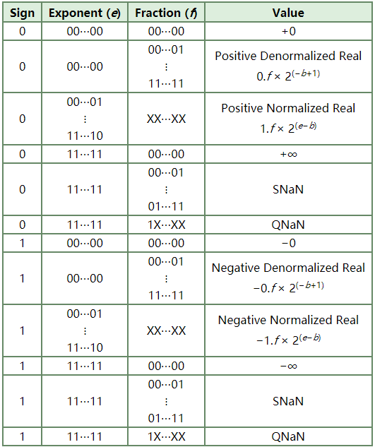

IEEE Standard 754 floating point is the most common representation today for real numbers on computers, including Intel-based PC’s, Macintoshes, and most Unix platforms. This article gives a brief overview of IEEE floating point and its representation. Discussion of arithmetic implementation may be found in the book mentioned at the bottom of this article.
Author: Steve Hollasch
You may visit the site: https://steve.hollasch.net/cgindex/coding/ieeefloat.html
There are several ways to represent real numbers on computers. Fixed point places a radix point somewhere in the middle of the digits, and is equivalent to using integers that represent portions of some unit. For example, one might represent 1/100ths of a unit; if you have four decimal digits, you could represent 10.82, or 00.01. Another approach is to use rationals, and represent every number as the ratio of two integers.
Floating-point representation – the most common solution – uses scientific notation to encode numbers, with a base number and an exponent. For example, 123.456 could be represented as 1.23456 × 102. In hexadecimal, the number 123.abc might be represented as 1.23abc × 162. In binary, the number 10100.110 could be represented as 1.0100110 × 24.
Floating-point solves a number of representation problems. Fixed-point has a fixed window of representation, which limits it from representing both very large and very small numbers. Also, fixed-point is prone to a loss of precision when two large numbers are divided.
Floating-point, on the other hand, employs a sort of “sliding window” of precision appropriate to the scale of the number. This allows it to represent numbers from 1,000,000,000,000 to 0.0000000000000001 with ease, and while maximizing precision (the number of digits) at both ends of the scale.
IEEE floating point numbers have three basic components: the sign, the exponent, and the mantissa. The mantissa is composed of the fraction and an implicit leading digit (explained below). The exponent base (2) is implicit and need not be stored.
The following table shows the layout for single (32-bit) and double (64-bit) precision floating-point values. The number of bits for each field are shown, followed by the bit ranges in square brackets. 00 = least-significant bit.
Floating Point Components
| Sign | Exponent | Fraction | |
|---|---|---|---|
| Single Precision | 1 [31] | 8 [30–23] | 23 [22–00] |
| Double Precision | 1 [63] | 11 [62–52] | 52 [51–00] |
Laid out as bits, floating point numbers look like this:
Single: SEEEEEEE EFFFFFFF FFFFFFFF FFFFFFFF
Double: SEEEEEEE EEEEFFFF FFFFFFFF FFFFFFFF FFFFFFFF FFFFFFFF FFFFFFFF FFFFFFFF
The sign bit is as simple as it gets: 0 denotes a positive number, and 1 denotes a negative number. Flipping the value of this bit flips the sign of the number.
The exponent field needs to represent both positive and negative exponents. To do this, a bias is added to the actual exponent in order to get the stored exponent. For IEEE single-precision floats, this value is 127. Thus, to express an exponent of zero, 127 is stored in the exponent field. A stored value of 200 indicates an exponent of (200−127), or 73. For reasons discussed later, exponents of −127 (all 0s) and +128 (all 1s) are reserved for special numbers.
Double precision has an 11-bit exponent field, with a bias of 1023.
The mantissa, also known as the significand, represents the precision bits of the number. It is composed of an implicit leading bit (left of the radix point) and the fraction bits (to the right of the radix point).
To find out the value of the implicit leading bit, consider that any number can be expressed in scientific notation in many different ways. For example, the number 50 can be represented as any of these:
0.050 × 103
.5000 × 102
5.000 × 101
50.00 × 100
5000. × 10−2
In order to maximize the quantity of representable numbers, floating-point numbers are typically stored in normalized form. This basically puts the radix point after the first non-zero digit. In normalized form, 50 is represented as 5.000 × 101.
A nice little optimization is now available to us in base two, since binary has only one possible non-zero digit: 1. Thus, we can just assume a leading digit of 1, and don’t need to store it in the floating-point representation. As a result, we can assume a leading digit of 1 without storing it, so that a 32-bit floating-point value effectively has 24 bits of mantissa: 23 explicit fraction bits plus one implicit leading bit of 1.
So, to sum up:
The sign bit is 0 for positive, 1 for negative.
The exponent base is two.
The exponent field contains 127 plus the true exponent for single-precision, or 1023 plus the true exponent for double precision.
The first bit of the mantissa is typically assumed to be 1, yielding a full mantissa of 1.f, where f is the field of fraction bits.
Let’s consider single-precision floats for a second. We’re taking essentially a 32-bit number and reinterpreting the fields to cover a much broader range. Something has to give, and that something is precision. For example, regular 32-bit integers, with all precision centered around zero, can precisely store integers with 32-bits of resolution. Single-precision floating-point, on the other hand, is unable to match this resolution with its 24 bits. It does, however, approximate this value by effectively truncating from the lower end and rounding up. For example:
11110000 11001100 10101010 10101111 // 32-bit integer
= +1.1110000 11001100 10101011 x 231 // Single-precision float
= 11110000 11001100 10101011 00000000 // Actual float valueThis approximates the 32-bit value, but doesn’t yield an exact representation. On the other hand, besides the ability to represent fractional components (which integers lack completely), the floating-point value can represent numbers around 2127, compared to 32-bit integers’ maximum value around 232.
The range of positive floating point numbers can be split into normalized numbers (which preserve the full precision of the mantissa), and denormalized numbers (which assume a leading digit of 0, discussed later) which use only a portion of the fractions’s precision.
Floating Point Range
| Denormalized | Normalized | Approximate Decimal | |
|---|---|---|---|
| Single Precision | ± 2-149 to (1−2−23)×2-126 | ± 2-126 to (2−2−23)×2127 | ± ≈10−44.85 to ≈1038.53 |
| Double Precision | ± 2−1074 to (1−2−52) × 2−1022 | ± 2−1022 to (2−2−52)×21023 | ± ≈10−323.3 to ≈10308.3 |
Since every floating-point number has a corresponding, negated value (by toggling the sign bit), the ranges above are symmetric around zero.
There are five distinct numerical ranges that single-precision floating-point numbers are not able to represent with the scheme presented so far:
Overflow means that values have grown too large for the representation, much in the same way that you can overflow integers. Underflow is a less serious problem because is just denotes a loss of precision, which is guaranteed to be closely approximated by zero.
Here’s a table of the total effective range of finite IEEE floating-point numbers:
Effective Floating-Point Range
| Binary | Decimal | |
|---|---|---|
| Single | ± (2−2−23) × 2127 | ≈ ± 1038.53 |
| Double | ± (2−2−52) × 21023 | ≈ ± 10308.25 |
Note that the extreme values occur (regardless of sign) when the exponent is at the maximum value for finite numbers (2127 for single-precision, 21023 for double), and the mantissa is filled with 1s (including the normalizing 1 bit).
IEEE reserves exponent field values of all 0s and all 1s to denote special values in the floating-point scheme.
If the exponent is all 0s, then the value is a denormalized number, which now has an assumed leading 0 before the binary point. Thus, this represents a number (−1)s × 0.f × 2−126, where s is the sign bit and f is the fraction. For double precision, denormalized numbers are of the form (−1)s × 0.f × 2−1022.
As denormalized numbers get smaller, they gradually lose precision as the left bits of the fraction become zeros. At the smallest non-zero denormalized value (only the least-significant fraction bit is one), a 32-bit floating-point number has but a single bit of precision, compared to the standard 24-bits for normalized values.
You can think of zero as a denormalized number (an implicit leading 0 bit) with all 0 fraction bits. Note that −0 and +0 are distinct values, though they both compare as equal.
The values +∞ and −∞ are denoted with an exponent of all 1s and a fraction of all 0s. The sign bit distinguishes between negative infinity and positive infinity. Being able to denote infinity as a specific value is useful because it allows operations to continue past overflow situations. Operations with infinite values are well defined in IEEE floating point.
The value NaN (Not a Number) is used to represent a value that does not represent a real number. NaN’s are represented by a bit pattern with an exponent of all 1s and a non-zero fraction. There are two categories of NaN: QNaN (Quiet NaN) and SNaN (Signalling NaN).
A QNaN is a NaN with the most significant fraction bit set. QNaN’s propagate freely through most arithmetic operations. These values are generated from an operation when the result is not mathematically defined.
An SNaN is a NaN with the most significant fraction bit clear. It can be used to signal an exception when used in operations. SNaN’s can be handy to assign to uninitialized variables to trap premature usage.
Semantically, QNaN’s denote indeterminate operations, while SNaN’s denote invalid operations.
Operations on special numbers are well-defined by IEEE. In the simplest case, any operation with a NaN yields a NaN result. Other operations are as follows:
Special Arithmetic Results
| Operation | Result |
|---|---|
| n ÷ ±∞ | 0 |
| ±∞ × ±∞ | ±∞ |
| ±nonZero ÷ ±0 | ±∞ |
| ±finite × ±∞ | ±∞ |
| ∞ + ∞ ∞ − −∞ | +∞ |
| −∞ − ∞ −∞ + −∞ | −∞ |
| ∞ − ∞ −∞ + ∞ | NaN |
| ±0 ÷ ±0 | NaN |
| ±∞ ÷ ±∞ | NaN |
| ±∞ × 0 | NaN |
| NaN == NaN | false |
To sum up, the following are the corresponding values for a given representation:
Float Values (b = bias)

A lot of this stuff was observed from small programs I wrote to go back and forth between hex and floating point (printf-style), and to examine the results of various operations. The bulk of this material, however, was lifted from Stallings’ book.
— 2021年7月29日
Made with ❤ and at Earth.